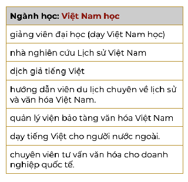
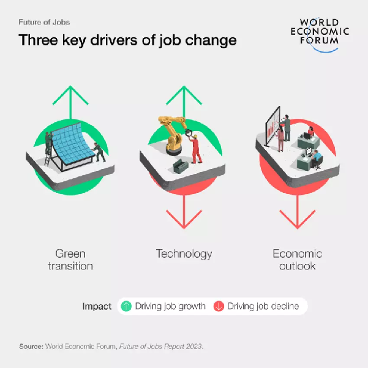
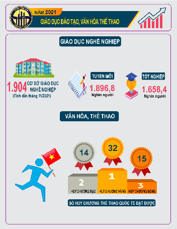
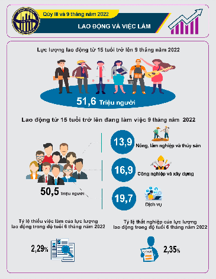
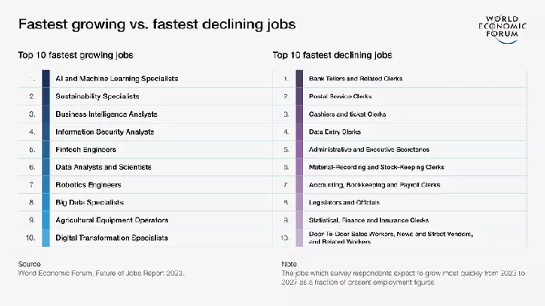
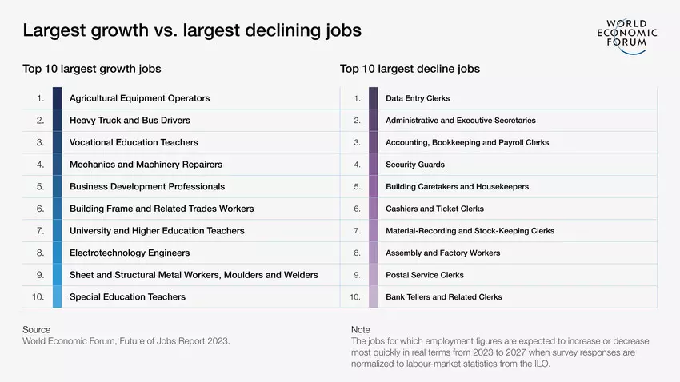

Listen to Summarize Key Information
from a News Report
Nghe và tóm tắt thông tin chính từ một bản tin
You are a mentor for a group of high school students in Vietnam, helping them choose their university majors with up-to-date information on job-market trends. You've been asked to create an infographic for a workshop. A colleague sent you a news report about changes in the job market in the near future — listen and identify the key information for your infographic.
Navigate sections using the left sidebar. Type answers directly into the input fields. Activities marked 💬 are for discussion — write your ideas in the text areas. Use Check Answers for exercises with fixed answers.

| Ngành học của bạn | |
| Cơ hội việc làm |
| Tiêu chí | Top 3 công việc |
|---|---|
| lương cao nhất | |
| ít áp lực nhất | |
| tự do nhất | |
| căng thẳng nhất |
| # | Đặc điểm của công việc mơ ước |
|---|---|
| 1 | lương cao |
| 2 | |
| 3 | |
| 4 | |
| 5 | |
| 6 | |
| 7 | |
| 8 | |
| 9 |
| Những công việc phát triển nhanh chóng (fast-growing jobs) | Những công việc giảm đi nhanh chóng (fast-declining jobs) |
|---|---|
You are a mentor for a group of high school students in Vietnam, helping them choose their majors at university with relevant, up-to-date information on job-market trends. You're asked to create an infographic for a workshop helping students make informed decisions. Your colleague sent you this news report about changes in the job market — listen and identify the key information.
Click to reveal transcript

| Nhận xét | |
|---|---|
| Điểm tốt | |
| Cần sửa |
Báo cáo dựa trên … chỉ ra / cho biết / kết luận / công bố (rằng) S-V-O — The report based on… points out / reveals / concludes / claims…
Theo …, … — According to…, …
Note: Rằng is a complementizer similar to English “that”. It can be omitted, but is used to emphasize or add formality.
→ Theo báo cáo Triển vọng việc làm 2023 của Diễn đàn Kinh tế Thế giới, đến năm 2027 khoảng 69 triệu việc làm sẽ được tạo ra.
Thăm dò dựa trên số liệu từ khoảng 800 công ty đang tuyển dụng hơn 11 triệu người lao động kết luận công nghệ và số hóa là hai động lực tạo việc làm mới cũng như loại bỏ việc làm hiện nay.
→ Theo thăm dò dựa trên số liệu từ khoảng 800 công ty đang tuyển dụng hơn 11 triệu người lao động, công nghệ và số hóa là hai động lực tạo việc làm mới cũng như loại bỏ việc làm hiện nay.
chỉ ra to point out · làm nổi bật to highlight · cho biết to indicate · liệt kê to enumerate · chứng minh to demonstrate · mô tả to illustrate · công bố to declare · nhấn mạnh to emphasize · đánh giá to evaluate · phân tích to analyze · đề cập đến to address · thảo luận to discuss · đề xuất to recommend · tóm tắt to summarize · kết luận to conclude · trình bày to present · kiểm tra to examine
💡 Suggested answers
2. Theo số liệu từ báo cáo, ngày càng nhiều sinh viên chọn nghề theo sở thích và đam mê cá nhân.
3. Nguồn thông tin từ báo cáo nhấn mạnh (rằng) việc kết hợp giữa học và làm là một xu hướng ngày càng phổ biến.
4. Báo cáo này chỉ ra rằng một số ngành Xã hội Nhân văn sẽ tạo ra nhiều việc làm mới mà hiện giờ chưa có.
5. Nói chung, báo cáo này đề cập (đến) rất nhiều điều bất ngờ về triển vọng việc làm.


💡 Suggested answers
2. Báo cáo công bố Việt Nam đã đạt được 32 huy chương vàng quốc tế trong năm 2021.
3. Báo cáo cho biết năm 2021 Việt Nam đã đạt được 14 huy chương bạc quốc tế.
4. Báo cáo chỉ ra rằng năm 2021 Việt Nam đã đạt được 15 huy chương đồng quốc tế.
5. Báo cáo của Tổng cục Thống kê cho biết lực lượng lao động từ 15 tuổi trở lên 9 tháng năm 2022 là 51,6 triệu người.
6. Báo cáo của Tổng cục Thống kê công bố lực lượng lao động từ 15 tuổi trở lên đang làm việc 9 tháng năm 2022 là 50,5 triệu người.
7. Báo cáo của Tổng cục Thống kê cho biết lao động trong ngành dịch vụ 9 tháng năm 2022 là 19,7 triệu người.
8. Báo cáo chỉ ra lao động trong ngành công nghiệp và xây dựng 9 tháng năm 2022 là 16,9 triệu người.


Source: World Economic Forum, Future of Jobs Report 2023
| # | Nghề đang phát triển |
|---|---|
| 1 | |
| 2 | |
| 3 | |
| 4 | |
| 5 | |
| 6 | |
| 7 | |
| 8 | |
| 9 | |
| 10 | |
| 11 | |
| 12 | |
| 13 | |
| 14 | |
| 15 | |
| 16 | |
| 17 | |
| 18 | |
| 19 | |
| 20 |
| Nội dung | Answer |
|---|---|
| 1. Giáo viên mầm non | |
| 2. Chuyên gia trí tuệ nhân tạo | |
| 3. Kĩ sư năng lượng tái tạo | |
| 4. Chuyên gia tiếp thị số | |
| 5. Chuyên viên phân tích dữ liệu | |
| 6. Chuyên gia an ninh mạng | |
| 7. Kĩ sư công nghệ sinh học | |
| 8. Kĩ sư robot | |
| 9. Chuyên gia bảo mật thông tin | |
| 10. Nhà phân tích thị trường |
Click to reveal answer key & transcript
2. Báo cáo do Diễn đàn Kinh tế Thế giới công bố.
3. Đến năm 2030, nhiều công việc truyền thống sẽ bị loại bỏ và nhu cầu về các kĩ năng mới sẽ tăng cao.
4. An ninh mạng, phân tích dữ liệu và học máy.
5. Người lao động cần thay đổi và học các kĩ năng mới.
Đây là bản tin về tình hình việc làm toàn cầu.
Diễn đàn Kinh tế Thế giới vừa công bố một báo cáo mới về triển vọng việc làm toàn cầu. Báo cáo cho thấy lực lượng lao động đang trải qua nhiều thay đổi do sự tác động của tự động hoá và trí tuệ nhân tạo. Dự báo đến năm 2030, nhiều công việc truyền thống sẽ bị loại bỏ, trong khi nhu cầu về các kĩ năng mới như an ninh mạng, phân tích dữ liệu và học máy sẽ tăng cao.
Báo cáo của Diễn đàn Kinh tế Thế giới cũng chỉ ra rằng, các nhà tuyển dụng đang phải đối mặt với những thay đổi lớn, nhưng điều này cũng tạo ra những công việc mới. Tuy nhiên, việc làm trong một số ngành công nghiệp sẽ sụt giảm.
Cuối cùng, báo cáo nhấn mạnh rằng, người lao động, đặc biệt là các bạn trẻ cần thay đổi và học các kĩ năng mới. Đây chính là chìa khóa để tiếp tục phát triển trong thị trường việc làm toàn cầu.
Cảm ơn quý vị đã theo dõi. Xin chào và hẹn gặp lại.
Mây là thợ máy
Còn Mai là thầy
Mây sửa mấy máy xay
May xây mấy nhà máy
Mai dạy cấy dạy cày
Ai ai cũng mê cây
Và lại hay hài hước!
Mây is a mechanic
While Mai is a teacher
Mây repairs grinding machines
May constructs factories
Mai teaches planting and plowing
Everyone loves trees
And is humorous!
🎙 Post your recording on the class Padlet if you want to share it with the learner community.
| G | Goal | Create an infographic presenting high-demand jobs in Vietnam and your home country to compare job trends in the two countries. |
| R | Role | You are a panelist sharing future job trends in the world with Vietnamese students. |
| A | Audience | Vietnamese students. |
| S | Situation | You are invited to a virtual panel of students from different countries to share future job trends with a group of Vietnamese students. Before the discussion, each panelist has around 5 minutes to talk about the job trends in their home country. |
| P | Product | An infographic you can screen-share while comparing future employment in Vietnam and your country. Publish your work on the Exit Task Padlet if you want to share publicly. |
| S | Standard | Use this source for Vietnam's high-demand future jobs. 1. All key facts / concepts are displayed, intended to inform the viewer. 2. Color, shape, size, and arrangement contribute meaning to the overall message. 3. The design / layout is neat, clear, and visually appealing. 4. Credit / citations are provided for all images and research information. 5. Good control of language (word choice, well-structured phrases, accurate spelling). 6. Reliable sources of information. |
| Việt Nam | Nước của bạn | |
|---|---|---|
| Nghề có nhu cầu cao | ||
| Số liệu chính | ||
| Nguồn |
Click 🔊 to hear each word. Flashcards: Quizlet SA · Quizlet NA
Click 🔊 to hear each word. Flashcards: Quizlet SA · Quizlet NA
Click 🔊 to hear each word. Flashcards: Quizlet SA · Quizlet NA